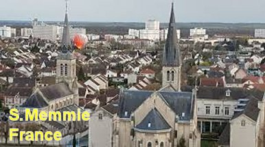
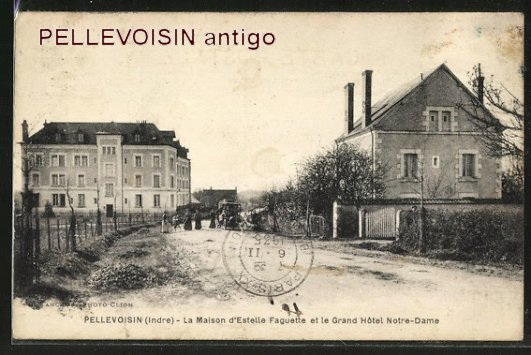
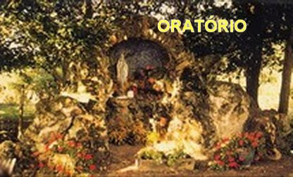
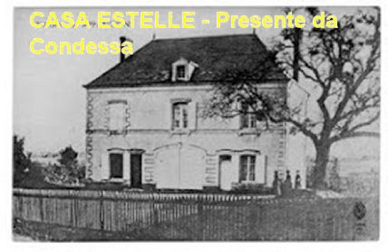

“MULHER PREDESTINADA”
A FAMÍLIA

Estelle Faguette nasceu no dia 12 de setembro de 1843 em Saint-Memmie perto de Châlons-sur-Marne, na França, de pais muito pobres. Sempre foi uma moça bastante religiosa e se tornou Filha de Maria com a idade de 14 anos (1857). Seus pais sem trabalho fixo dependiam de auxilio financeiro, pois se encontravam em serias dificuldades para manutenção do lar. Ela, Estelle, era quem providenciava com seu trabalho o abastecimento, colocando todo o necessário em casa. Mas a jovem Estelle também estava sempre doente, revelando que o seu organismo necessitava de maiores cuidados. Tendo que trabalhar, passou a levar uma vida simples de empregada doméstica. Aconselhada por seu confessor, que era o Pároco da Igreja de Santa Madeleine, em Paris, entrou na Ordem Religiosa das Freiras Agostinianas, servindo como Enfermeira no Hôtel-Dieu, grande hospital da capital francesa. Desse modo, podia assim simultaneamente cuidar dos doentes e também, ser tratada dos seus muitos problemas de saúde. Entretanto a sua constituição física não ajudava, na continuidade do trabalho passou a sentir uma fraqueza no corpo cada vez maior e mais intensa, o que a levou interromper o Noviciado com as Irmãs Agostinianas em 1863.
BABÁ E DOMÉSTICA

A convivência diária e a fina educação dos seus patrões logo despertaram em Estelle uma grande admiração por eles. Assim, ela procurava retribuir aquela amizade e admiração com um trabalho competente e atencioso. Por isso mesmo, na continuidade dos anos, nas sérias manifestações da sua doença, eles também não faltaram, cuidaram de Estelle “com grande dedicação”, segundo as palavras dela mesma. A bondade e atenção da Condessa de La Rochefoucauld sempre a consolaram, em todas as oportunidades.
UMA MULHER DOENTE
E assim, Estelle permaneceu com sua doença em tratamento por cerca de 10 a 12 anos, trabalhando com competência no Castelo e com os filhos da Condessa. Mas, em junho de 1875 o seu quadro clínico se agravou. As opiniões dos especialistas eram totalmente desanimadoras. Os diagnósticos apresentados pelos médicos Dr. Benard e Dr. Hubert, com clínica em Buzançais, cidade próxima, atestavam que Estelle Faguette sofria de Tuberculose, também Peritonite aguda, sendo ainda portadora de um tumor abdominal (provavelmente um abscesso). Com este quadro infeccioso em 10 de Fevereiro de 1876, indicava uma morte bem próxima. Inclusive os dois médicos chegaram a estimar que ela tivesse apenas poucos dias de vida.
Evidentemente era uma situação crítica, porque Estelle estava com apenas 33 anos de idade, e aquela notícia além de ser terrível para a vida dela, também deixou traumatizada a sua família que dependia daquele precioso salário que ela recebia.

SUPLICANDO A AJUDA DIVINA
Com imensa fé na misericórdia Divina, Estelle escreveu uma carta a SANTÍSSIMA VIRGEM MARIA suplicando que ELA, a MÃE DE DEUS por SUA bondade e carinho maternal, intercedesse junto a JESUS, Seu Querido e Amado FILHO, pedindo a sua cura. Com habilidade conseguiu uma oportunidade de se deslocar até o Castelo de verão da Família Rochefoucauld, em Montbel, que também estava a três quilômetros de Pellevoisin, e num pequeno Oratório que existia na entrada da propriedade, havia uma bela imagem da SANTÍSSIMA VIRGEM MARIA. Ela colocou uma carta aos pés da imagem da VIRGEM, ajoelhou, rezou muito e chorou junto a imagem de NOSSA SENHORA. Depois, voltou para o Castelo Poiriers-Montbel.
RECEBEU A UNÇÃO DOS ENFERMOS
Nesse mesmo mês de fevereiro de 1876, a Condessa teve que viajar a Paris, e em virtude da situação da doméstica não ser boa, para não deixar Estelle sozinha no Castelo, providenciou um alojamento a ser disponibilizado para ela numa casa perto da Igreja Paroquial em Pellevoisin e também, um lugar no Cemitério de Pellevoisin ao lado da Igreja, para sepultura da sua criada tão apreciada e amiga, se ela morresse. Nesta oportunidade a família dos pais de Estelle tendo sido avisados, mudaram imediatamente para esta casa, a fim de dar total assistência à filha. O caso dela era verdadeiramente tão grave, que Estelle estava incapaz de comer qualquer coisa, exceto líquidos.
No dia 14 de Fevereiro, o seu médico, Dr. Hubert foi chamado às pressas, e examinando-a novamente, constatou que ela provavelmente tivesse apenas algumas horas de vida. Assim, considerando o aviso médico, seus pais chamaram o sacerdote e Estelle recebeu o Sacramento da Unção dos Enfermos. Foi muito bom, porque ela ficou mais calma, e apesar de desenganada pelo médico, passou a esperar resignadamente a morte.
ENTREGA TOTAL

Dias após estes acontecimentos, sentindo-se bem melhor ela disse: “Verdadeiramente, aquelas palavras vieram das profundezas do meu coração. E DEUS NOSSO SENHOR aceitou a minha oração”.
Desde o dia em que recebeu a Unção dos Enfermos, ela permaneceu deitada, com o espírito em grande tranquilidade. Aconteceu, todavia, que no entardecer daquele dia, do lado direito da cama, ela viu uma figura com forma humana horrível, ameaçadora, que agarrou o leito e sacudiu violentamente. Não era “Quem” ela esperava, mas Estelle não duvidou, era o bicho horroroso, o demônio. Mas o que essa "coisa" queria? O demônio presente na hora da minha morte? Ela ficou tomada de pânico, porque aquela presença maligna significava o "inferno". Entretanto, NOSSA SENHORA também apareceu imediatamente e logo perguntou a satanás: “O que você está fazendo aqui? Você não enxerga quem veste o MEU uniforme e do MEU FILHO?” O demônio rosnou qualquer coisa inaudível. Então a VIRGEM MARIA falou para tranquiliza-la: “Não tenha medo, você sabe muito bem que é MINHA FILHA”. De fato, Estelle havia ingressado na Congregação das Filhas de Maria em 1857. Em seguida, NOSSA SENHORA desapareceu.
Pouco depois, nessa mesma noite do dia 14 para 15 de Fevereiro de 1876, uma segunda-feira, a SANTÍSSIMA VIRGEM MARIA voltou, acontecendo verdadeiramente uma Primeira Visita da VIRGEM MÃE a Estelle.